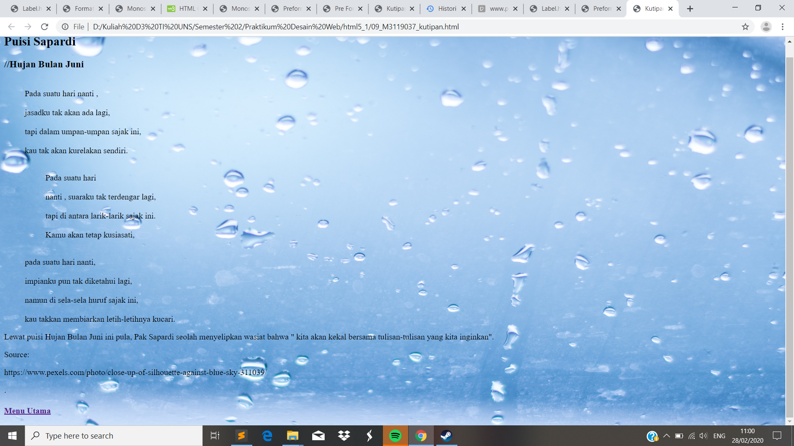

Format Teks
//Kutipan atau Quotes dalam HTML terbagi menjadi dua yaitu Blackqoutoe dan Inline Quote. Untuk Blockqoute penulisanya dapat menggunakan perintah <blockquote cite="url"> dan diakhiri dengan </blocqoute> . Sedangkan untuk Inlinea qoute menggunakan perintah <q> dan diakhiri dengan </q>
Codingan
<!DOCTYPE html>
<html>
<head>
<meta charset="UTF-8">
<title> Kutipan </title>
</head>
<body style ="background:url(rainn.jpg);background-repeat:no-repeat fixed;background-size : 100% 100%;">
<h2> Puisi Sapardi </h2>
<h3> //Hujan Bulan Juni </h3>
<blockquote cite ="https://www.gramedia.com/blog/5-kumpulan-puisi-cinta-sapardi-djoko-damono-paling-romantis/#gref">
<br>Pada suatu hari nanti , </br>
<br>jasadku tak akan ada lagi,</br>
<br>tapi dalam umpan-umpan sajak ini,</br>
<br>kau tak akan kurelakan sendiri.</br>
<blockquote cite ="https://www.gramedia.com/blog/5-kumpulan-puisi-cinta-sapardi-djoko-damono-paling-romantis/#gref">
<br> Pada suatu hari</br>
<br> nanti , suaraku tak terdengar lagi,</br>
<br> tapi di antara larik-larik sajak ini.</br>
<br> Kamu akan tetap kusiasati,</br>
</blockquote>
<br>pada suatu hari nanti,</br>
<br>impianku pun tak diketahui lagi,</br>
<br>namun di sela-sela huruf sajak ini,</br>
<br>kau takkan membiarkan letih-letihnya kucari.</br>
</blockquote>
<p>
Lewat puisi Hujan Bulan Juni ini pula, Pak Sapardi seolah menyelipkan wasiat bahwa
<q> kita akan kekal bersama tulisan-tulisan yang kita inginkan</q>.
</p>
Source:
<p>https://www.pexels.com/photo/close-up-of-silhouette-against-blue-sky-311039/</p>.
Tampilan Hasil Percobaan

Kesimpulan
Pada percobaan Blockquote memiliki posisi tepisah dengan paragraf atasnya. Sedangkan untuk Inline Quote akan menghasilkan kalimat dengan disertai tambahan tanda petik.